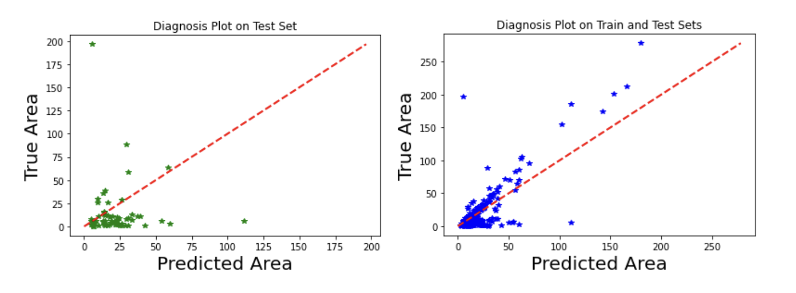

Our goal is to generate a regression model that predicts the burned area of a forest fire from the meteorological predictors in our data. We started with simple linear regression and chose temperature as our only predictor since in the correlation heatmap, the temperature has the highest correlation with area among the other variables (0.1). Upon examining our initial plot of temperature versus area, we discovered two additional outliers of extremely large area values and zero area values across all temperatures. We ran a linear regression on both the full data and inlier data, in which we excluded all the zero areas and large areas, or outliers. As expected, temperature and area have a positive linear relationship; however the coefficient, or slope, was still smaller than we expected.
We found the mean squared error to compare the accuracy of both models. The linear regression on the full data has an MSE of 4005.508, while the linear regression on the inlier data has an MSE of 1275.5608. It is clear that by removing the outliers from the data, we were able to create a model with less error. Although we created a linear model to predict the area of a forest fire from temperature alone, this simple linear model does not seem to be optimal for predicting the area of a forest fire. In our regression, we observed a high p-value for the temperature of 0.3; thus temperature alone does not have a significant relationship with area in the inlier data. More than likely, multiple independent variables contribute to the size of a natural fire. We tested this by running three more complex regression models using training and test sets with all 12 predictors as features to identify the optimal regression model to predict area. We only used the inlier data we identified from the simple linear regression to run these new models because we have shown that excluding outlier data runs more accurate regressions. We began with multiple linear regression on the training set, including all 12 variables, and graphed diagnosis plots to compare predicted and true area.
Then, we considered if the data was not linear, so we used a decision tree regressor to predict the area from all 12 predictors on the inlier data. Decision tree regression is a supervised machine learning algorithm that breaks the data into layers of subsets using true or false classifications. To avoid overfitting, we set the maximum depth of the decision tree to 15.
And lastly, we attempted to formulate one last model using a random forest regressor (Fig 16), with the expectation of predictions with less error than those of the previous decision tree regression. This is because the random forest algorithm consists of multiple decision trees and adds randomness among the trees, so the predictions should be more accurate. Similar to the decision tree model, we avoided overfitting by setting a maximum depth of 10 for the random forest algorithm.
